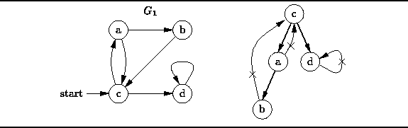

Data Structures and Algorithms
with Object-Oriented Design Patterns in Java
Data Structures and Algorithms
with Object-Oriented Design Patterns in Java
The depth-first traversal
of a graph is like
the depth-first traversal of a tree discussed in Section  .
A depth-first traversal of a tree always starts at the root of the tree.
Since a graph has no root,
when we do a depth-first traversal,
we must specify the vertex at which to begin.
.
A depth-first traversal of a tree always starts at the root of the tree.
Since a graph has no root,
when we do a depth-first traversal,
we must specify the vertex at which to begin.
A depth-first traversal of a tree visits a node and then recursively visits the subtrees of that node. Similarly, depth-first traversal of a graph visits a vertex and then recursively visits all the vertices adjacent to that node. The catch is that the graph may contain cycles, but the traversal must visit every vertex at most once. The solution to the problem is to keep track of the nodes that have been visited, so that the traversal does not suffer the fate of infinite recursion.

Figure: Depth-first traversal.
For example, Figure illustrates the depth-first traversal
of the directed graph  starting from vertex c.
The depth-first traversal visits the nodes in the order
starting from vertex c.
The depth-first traversal visits the nodes in the order
A depth-first traversal only follows edges that lead to unvisited vertices.
As shown in Figure ,
if we omit the edges that are not followed,
the remaining edges form a tree.
Clearly, the depth-first traversal of this tree
is equivalent to the depth-first traversal of the graph
 Copyright © 1998 by Bruno R. Preiss, P.Eng. All rights reserved.
Copyright © 1998 by Bruno R. Preiss, P.Eng. All rights reserved.